6) Splunk Challenge
difficulty 🎄🎄🎄
The Objective
Access the Splunk terminal in the Great Room. What is the name of the adversary group that Santa feared would attack KringleCon?
Chat with Minty Candycane
After helping Minty Candycane with Regex Game challenge the following conversation ensues.
Great job! You make this look easy!
Hey, have you tried the Splunk challenge?
Are you newer to SOC operations? Maybe check out his intro talk from last year.
Dave Herrald is doing a great talk on tracking adversary emulation through Splunk!
Don't forget about useful tools including Cyber Chef for decoding and decrypting data!
It's down in the Great Room, but oh, they probably won't let an attendee operate it.
Hints Courtesy Minty Candycane
Splunk Basics
There was a great Splunk talk at KringleCon 2 that's still available!
Adversary Emulation and Splunk
Dave Herrald talks about emulating advanced adversaries and hunting them with Splunk.
Data Decoding and Investigation
Defenders often need to manipulate data to decRypt, deCode, and refourm it into something that is useful. Cyber Chef is extremely useful here!
Solution
In this challenge we need to find out the name of the adversary group that Santa feared would attack KringleCon. There are 7 training questions followed by a challenge question. We need to use Splunk to answer most of the questions. The final challenge question doesn't require using Splunk at all!
On opening the terminal we get the following chat screen
Chat with #KringleCastleSOC
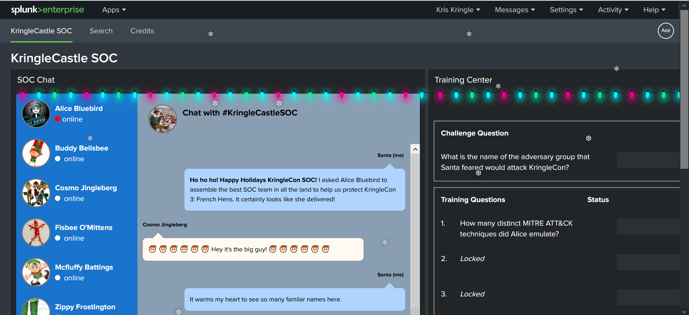
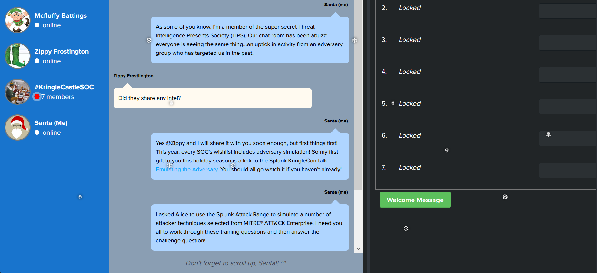
Let's launch the splunk search interface
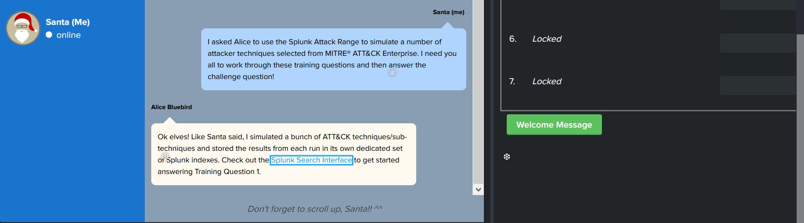
Training Questions
Training Question 1
How many distinct MITRE ATT&CK techniques did Alice emulate?
Chat with Alice
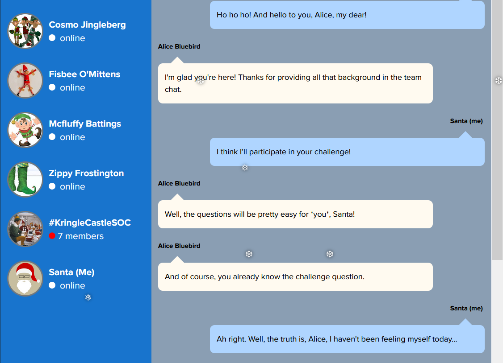
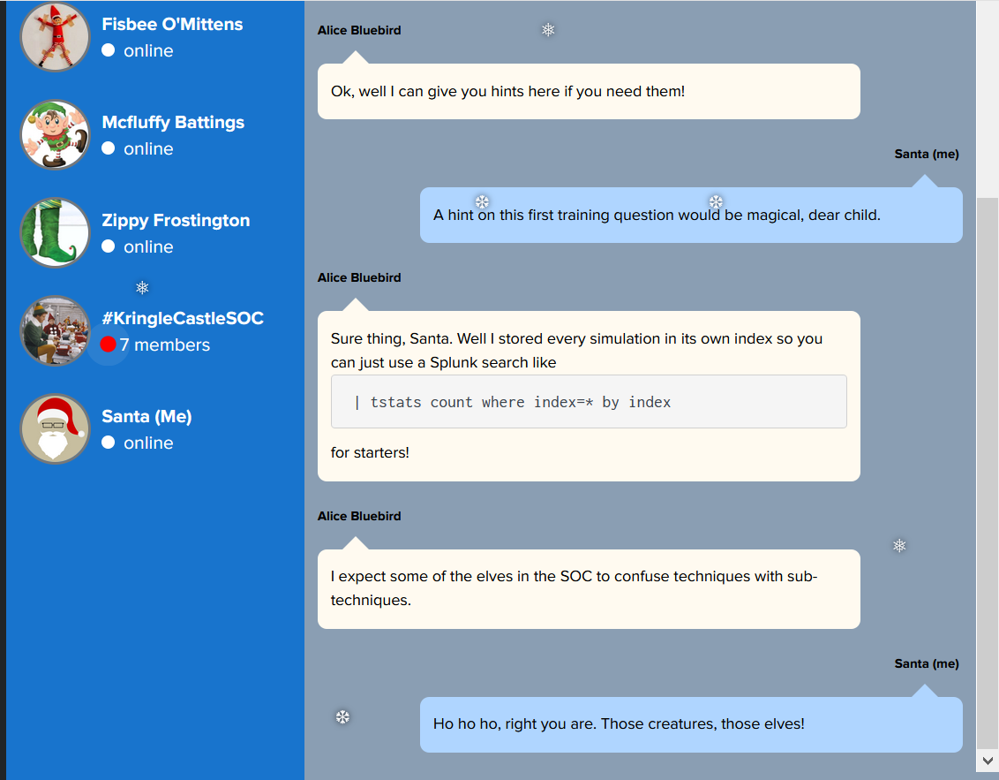
Splunk Search query
| tstats count where index=* by index
| search index=T*-win OR T*-main
| rex field=index "(?<technique>t\d+)[\.\-].0*"
| stats dc(technique)
Search Results
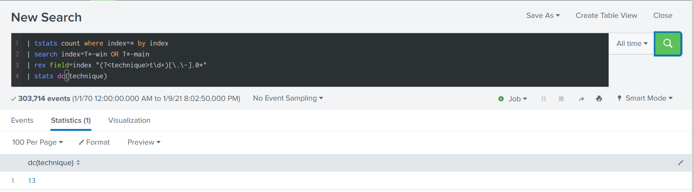
Answer for training question 1
13
Training Question 2
What are the names of the two indexes that contain the results of emulating Enterprise ATT&CK technique 1059.003? (Put them in alphabetical order and separate them with a space)
Chat with Alice
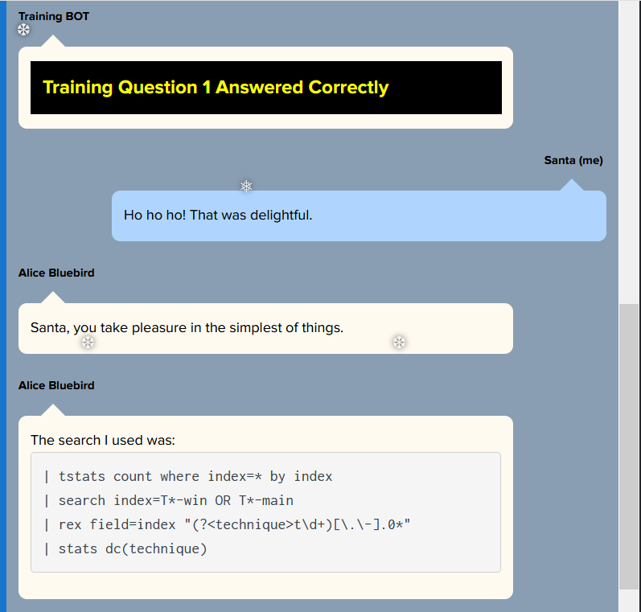
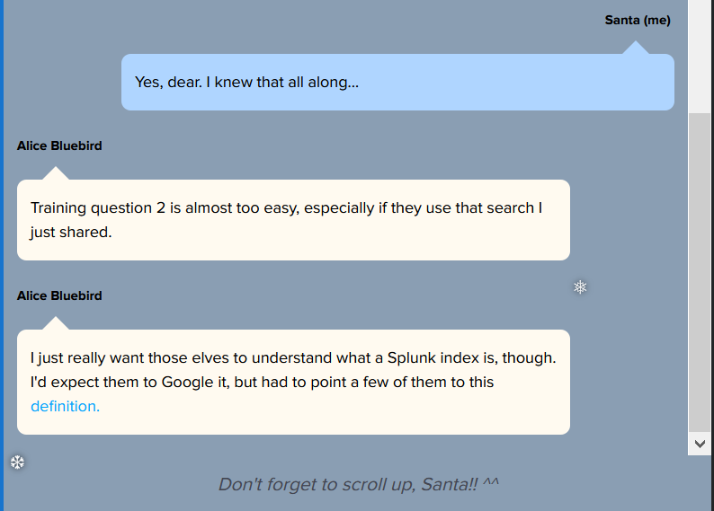
The definition that Alice mentions can be found here - definition of index
Splunk Search query
| tstats count where index=* by index
| search index=T*-win OR index=T*-main
| rex field=index "(?<technique>t\d+\.\d+)[\.\-].0*"
| search technique="t1059.003*"
Search Results
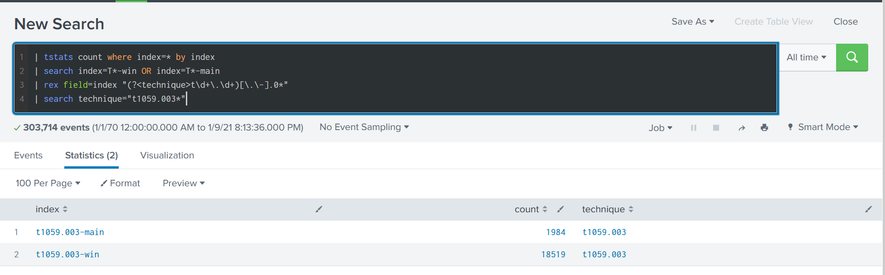
Answer for training question 2
t1059.003-main t1059.003-win
Training Question 3
One technique that Santa had us simulate deals with 'system information discovery'. What is the full name of the registry key that is queried to determine the MachineGuid?
Hint from Alice
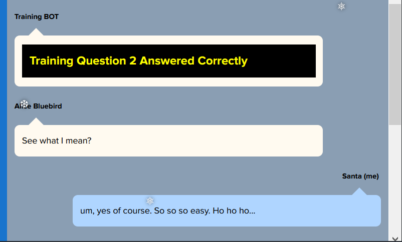
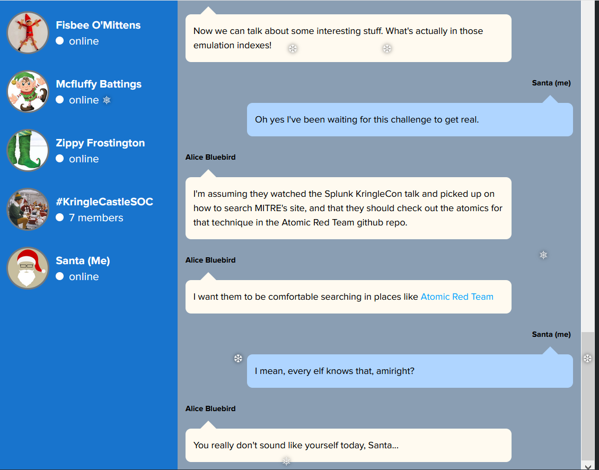
querying MITRE and Atomic RED
By querying MITRE we find that System Information Discovery corresponds to technique T1082. On querying Atomic Red Team for exploits related to this technique we find the following page
This command is of particular interest and we can get the name of the register being queried.
REG QUERY HKEY_LOCAL_MACHINE\SOFTWARE\Microsoft\Cryptography /v MachineGuid
Answer for training question 3
HKEY_LOCAL_MACHINE\SOFTWARE\Microsoft\Cryptography
Training Question 4
According to events recorded by the Splunk Attack Range, when was the first OSTAP related atomic test executed? (Please provide the alphanumeric UTC timestamp.)
Hint from Alice
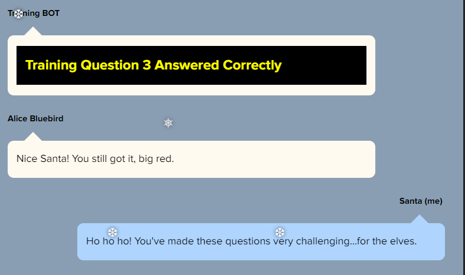
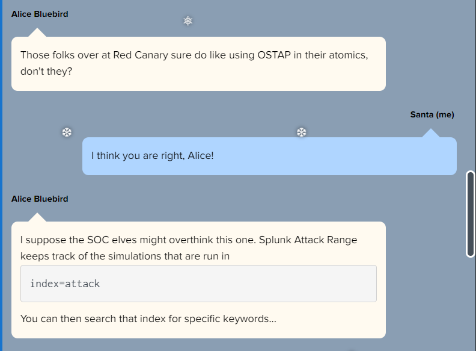
Splunk Search query
| index=attack "*ostap*"
Search Results
We can sort the 5 attacks found by Execution Time _UTC to get the answer.
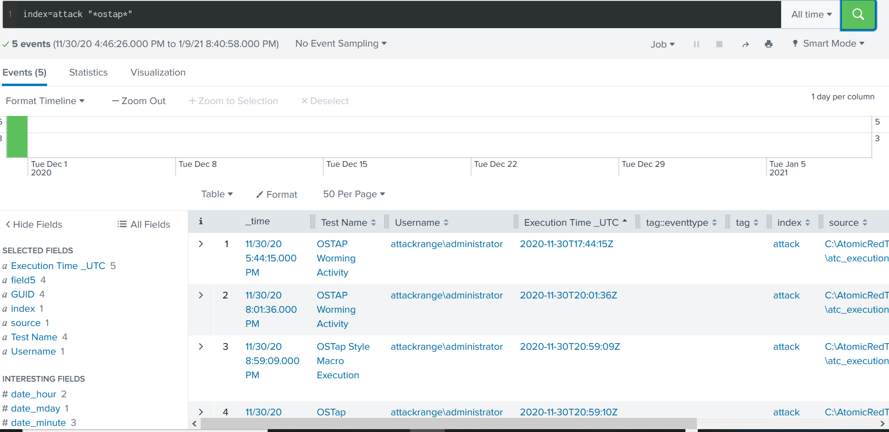
Answer for training question 4
2020-11-30T17:44:15Z
Training Question 5
One Atomic Red Team test executed by the Attack Range makes use of an open source package authored by frgnca on GitHub. According to Sysmon (Event Code 1) events in Splunk, what was the ProcessId associated with the first use of this component?
Chat With Alice
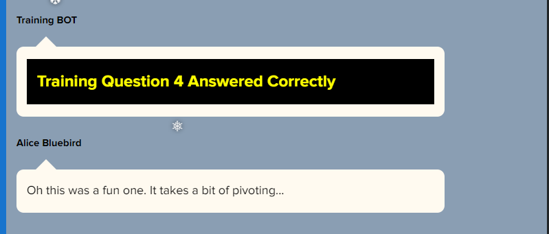
Splunk Search query
Searching for packages authored by frgnca on GitHub we find https://github.com/frgnca/AudioDeviceCmdlets which is made use of by atomic red team as part of T1123.
index="T1123*" EventCode=1 "*WindowsAudioDevice*"
| sort _time
Search Results
The answer is the process ID with the lowest UTC time.
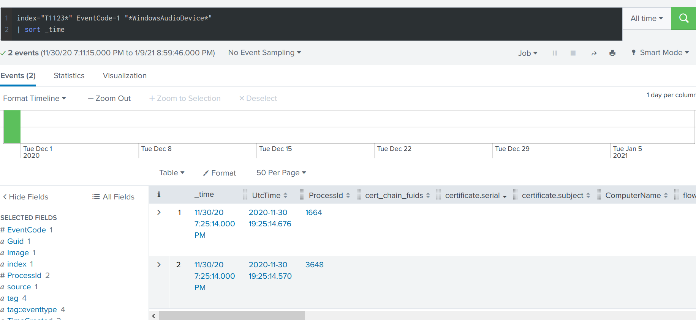
Answer for training question 5
3648
Training Question 6
Alice ran a simulation of an attacker abusing Windows registry run keys. This technique leveraged a multi-line batch file that was also used by a few other techniques. What is the final command of this multi-line batch file used as part of this simulation?
Splunk Search query
index=t* file_name="*\.bat*"
Search Results
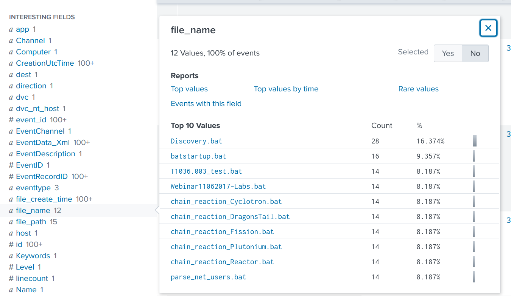
By seraching for each of these files in turn on atomic red team we find the right file is Discovery.bat
Answer for training question 6
quser
Training Question 7
According to x509 certificate events captured by Zeek (formerly Bro), what is the serial number of the TLS certificate assigned to the Windows domain controller in the attack range?
Hint from Alice
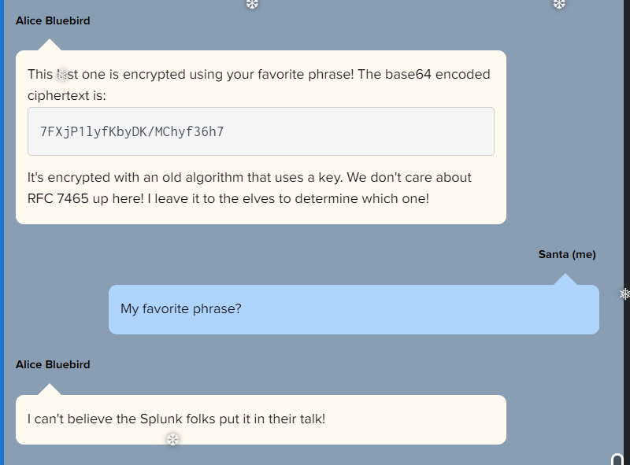
Splunk Search query
index=* sourcetype=bro:x509:json
Search Results
We can get the answer by expanding any of the bro:x509:json events obtained and looking at the certificate serial number.
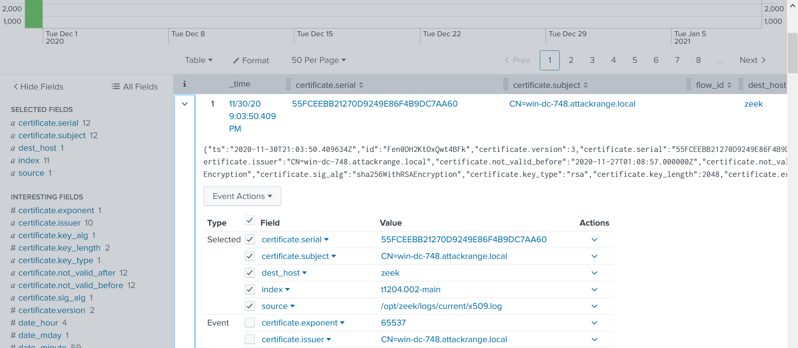
Answer for training question 7
55FCEEBB21270D9249E86F4B9DC7AA60
Challenge Question
What is the name of the adversary group that Santa feared would attack KringleCon?
Solution
RFC 7465 is related to RC4 stream cipher. So we assume this is the encryption used for the name of the adversary. To find out the passphrase let's revisit the splunk talk.
Towards the end of the video this pops up
Let's go to cyberchef and first decode the base64 encoded string. Now let's use RC4 recipe with the passphrase set to "Stay Frosty" to unencrypt the base64 encoded string.
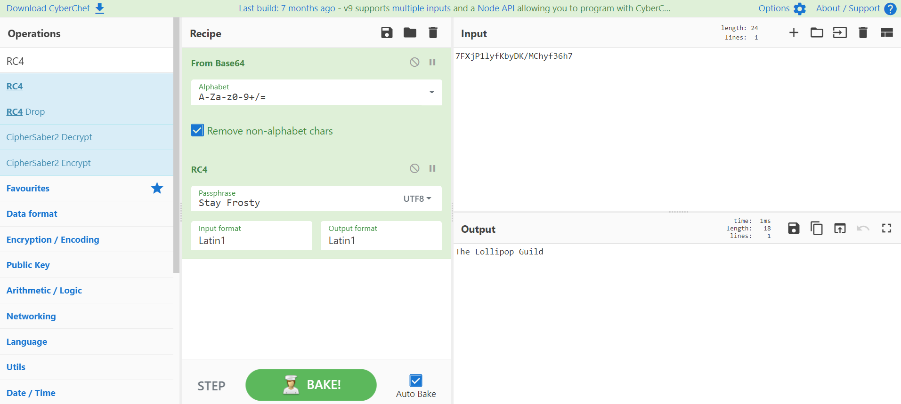
Rejoice
We found the name of the adversary group!
Answer
The Lollipop Guild